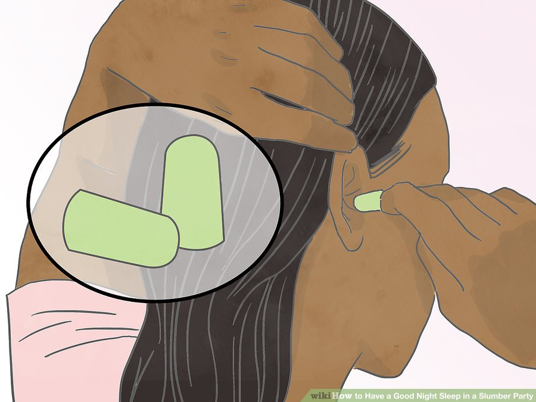
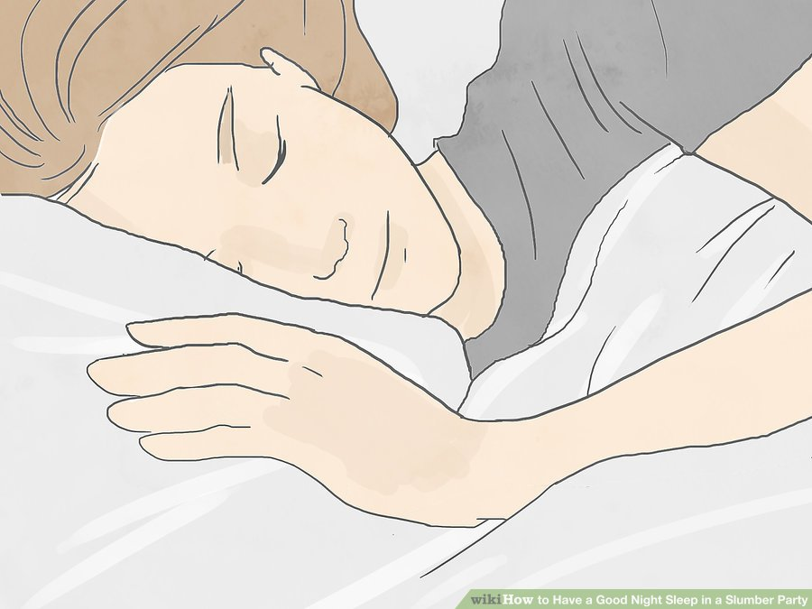
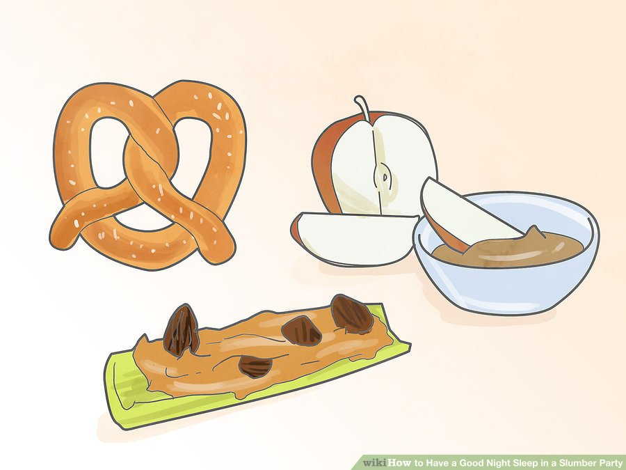
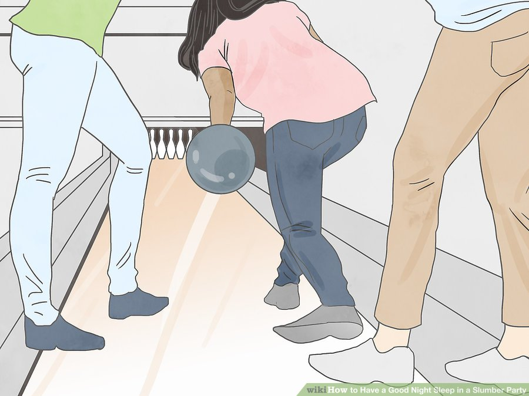

The "slumber" part of a slumber party can easily be forgotten. You may look forward to having fun with your friends, but may be too shy to say you actually want to get some rest. Plus, a morning feeling cranky and sleep deprived is anything but fun. Remember some tips for comfort and relaxation, and a slumber party can be fun-filled and full of good sleep.Bring comfort items from home. Bring items from home like a favorite blanket, stuffed animal or pillow. Maybe you have a journal you like to write in. A flashlight may be a good thing to bring, if you're scared of the dark. These items will help you feel at home, while also helping you relax, when bedtime rolls around.

Make sure there's a lights out time. Hopefully, the parent supervising the party sets a lights out time in advance. If everyone knows what bedtime to expect, it will reduce whining and rebellion later on. If you're over 10 years old, you can handle a later lights out time, like 12:00 a.m.[2]
Everyone will probably giggle and maybe try to tell ghost stories for 15-30 minutes, but after that you should all be snoozing.

Bring ear plugs. Practice sleeping with ear plugs before the slumber party, if you're not used to them. Pop your ear plugs in at the party, when you want to go to sleep, but your friends keep talking.

Plan to sleep in. Don’t expect to do a lot of bright and early activities. Even if everyone gets to sleep on time, the activities from the slumber party will need plenty of rest. Tell your parents to pick you up no earlier than 10:00 a.m., and 12:00 p.m. is even better.[3]
Sleep in as much as you can, have breakfast, get dressed and play outside, if it’s a nice day.
Watch cartoons, play with dolls or action figures in the morning.

Eat healthy snacks. Of course eat cake, if the slumber party is for a birthday, but remember that sugar will keep you wound up. Eat plenty of snacks throughout the party to keep your belly full, but make sure they aren’t things like white bread, candy bars or french fries. Those things will give you a rush of energy and make it harder to sleep.[4] Healthy snacks include:
Apples and peanut butter.
Pretzels.
Bugs on a log is celery filled with peanut butter and topped with raisins.
Miniature whole wheat pizzas. Choose toppings like sausage, spinach, mushrooms or peppers.
Don’t drink soda or other caffeinated beverages. Soda and caffeine are a big no-no at slumber parties. You will already be full of energy and happy you are spending the night with friends. Don’t create energy overload by drinking sugary drinks like soda. Drink water and juice instead.